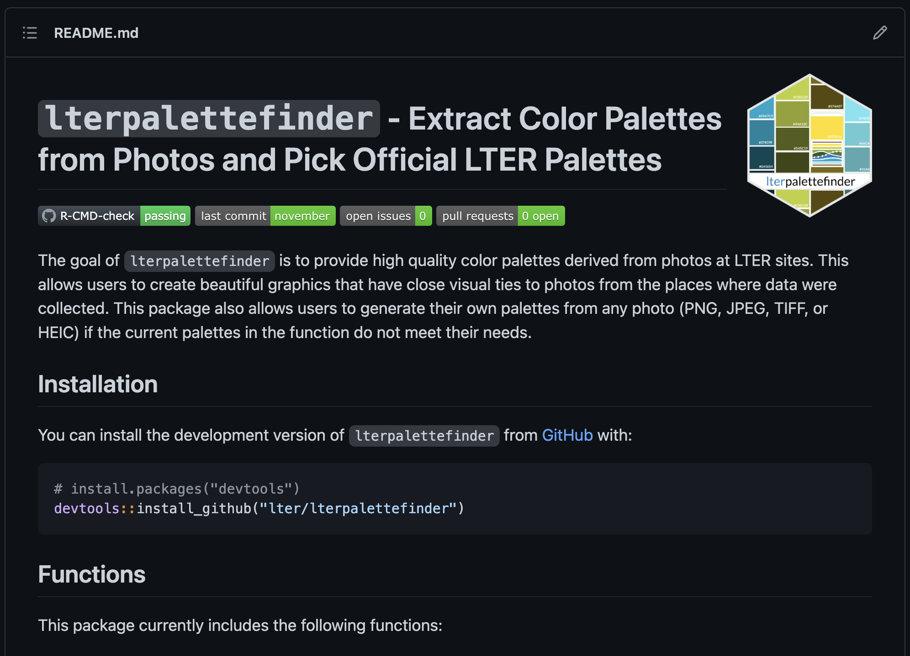
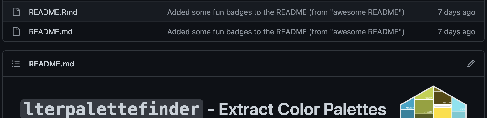
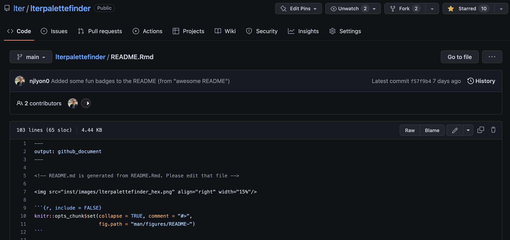
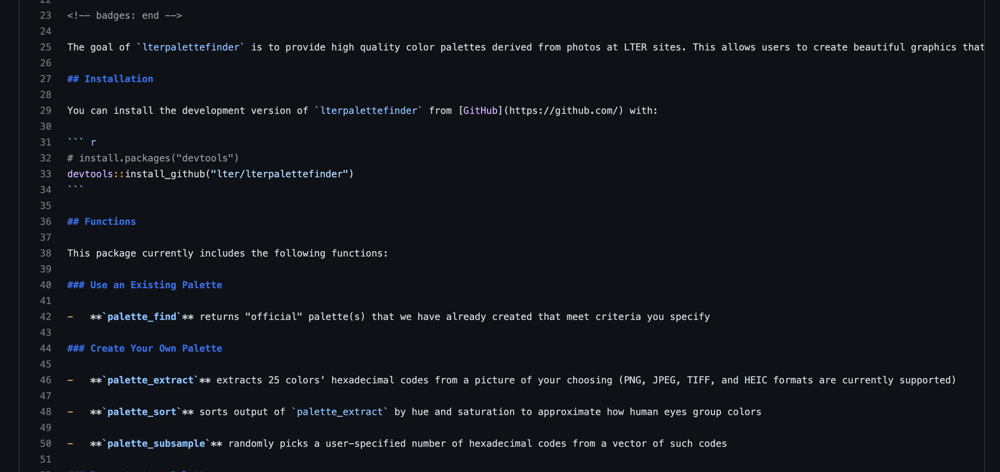

Informative READMEs
Module Learning Objectives
By the end of this module, you will be able to:
- Describe the value of an informative README
- Refine a README on an existing repository
What is a README?
A README does exactly what its name suggests: it contains a summary of all of the information needed to navigate a given folder’s contents. However, you are responsible for creating a README and adding content to it so its value is somewhat dependent upon the time you are willing and able to spend on fleshing it out.
In GitHub, READMEs can be particularly useful because they form a landing page at the bottom of your repository’s GitHub page that can be a great way of introducing new people to your project or refreshing ‘future you’ on how you stored things for a given project.
A README is almost always either a Markdown file (ending in “.md”) or an R markdown file (“.Rmd”). The default for a GitHub repository is “.md” but if you want your README to run R code (e.g., to create graphs, run analysis, etc.) you can create a .Rmd one that can support R code chunks.
Example README

Let’s check out the README for the R package lterpalettefinder as one example of an informative README. This R package was developed by the LTER Network Office to share official palettes derived from photos taken at LTER sites and evolved to include a suite of R functions that allow color palettes to be extracted from any user-supplied photo.
The README for lterpalettefinder is crucial because it provides the following information:
- Brief description of the purpose / utility of the package
- Instructions on how to install the “development version” of the package
- This is useful because the version of a package that is on CRAN (and can be installed with
install.packages()) is often less up-to-date than the version that is available on GitHub
- This is useful because the version of a package that is on CRAN (and can be installed with
- List of current functions and what they do
- Hex logo of the package
Visitors to the README see the following:

This README contains a bunch of “bonus” information including nice aesthetic touches and various “badges” denoting timing of last commit and that the package has no errors among other things.
The “README.Rmd” file in the GitHub repository can be found at the bottom of the repository list of files (which works out to be just above the rendered README landing page!).

If you click that file, you can view the “raw” file which is written in “markdown syntax”. Markdown syntax is a simplified (relatively) way of formatting text that provides coarse control without getting bogged down in potentially unnecessary levels of detail. Markdown syntax is discussed extensively elsewhere and your README can be very valuable with just plain text in a .md file so we will avoid discussing it in detail here.
The main take away here is that “under the hood”, this package’s README landing page is generated from the formatting specified in this “raw” file. Flip back and forth between the raw view and the displayed README and see if you can catch how various text formatting was accomplished!


Writing a README
We recommend that you edit your README to include (some of) the following components:
- An informative, un-abbreviated title (beginning with one
#to make it a header) - A brief (likely bulleted) description of the major folders in the repository
- How / in which folder to contribute new files to the repository
- Contact information for primary contact for questions
- If applicable, links to related repositories (e.g., other repositories created by your working group)
The most important thing is that you structure your README in a way that is intuitive to your team so that you feel capable to maintain it so that is remains useful and relevant as a landing page for your project.
Other Resources for READMEs
Navendu Pottekkat made a really cool “Awesome README” that includes several optional features to make a README awesome-r. In particular that README includes special badges showing the timing of the last commit and features embedded header and footer images. This type of aesthetic modification is not required but can be a fun way of making your README stand out!